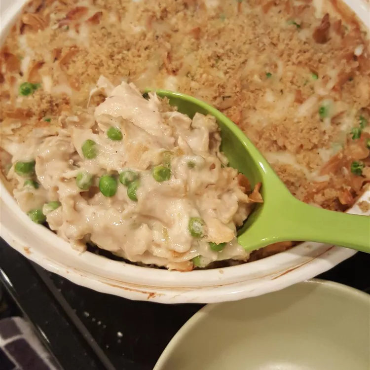

Odin Recipes - Tuna Noodle Casserole

Description
This tuna noodle casserole uses condensed cream of mushroom soup to flavor a creamy sauce that is mixed with tuna, egg noodles, and peas, topped with a crunchy bread crumb topping, and baked to perfection.
Ingredients
- 4 cups hot cooked medium egg noodles
- 2 (10.5 ounce) cans Campbell's® Condensed Cream of Mushroom Soup (regular or 25% Lower Sodium)
- 2 (10 ounce) cans tuna, drained
- 2 cups frozen peas
- 1 cup milk
- 2 tablespoons dry bread crumbs
- 1 tablespoon butter, melted
Steps
- Pre-heat the oven to 400 degrees F (200 degrees C).
- Stir cooked noodles, condensed soup, tuna, peas, and milk in a 3-quart casserole.
- Bake in the preheated oven until hot, about 30 minutes; stir well.
- Mix bread crumbs with melted butter in a bowl; sprinkle over tuna casserole and continue to bake until bread crumbs are golden brown and crispy, 5 minutes more.